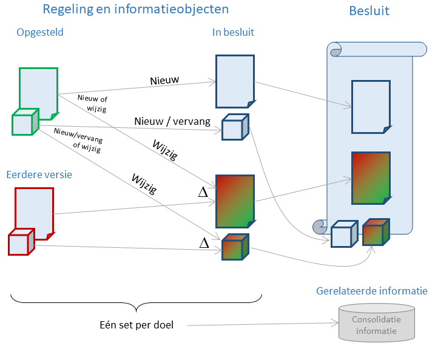
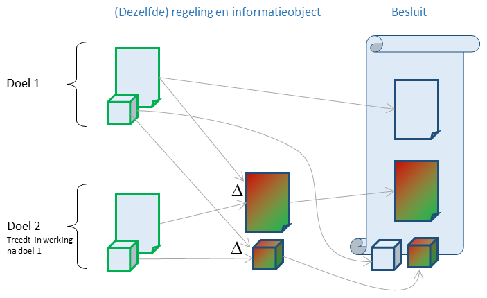
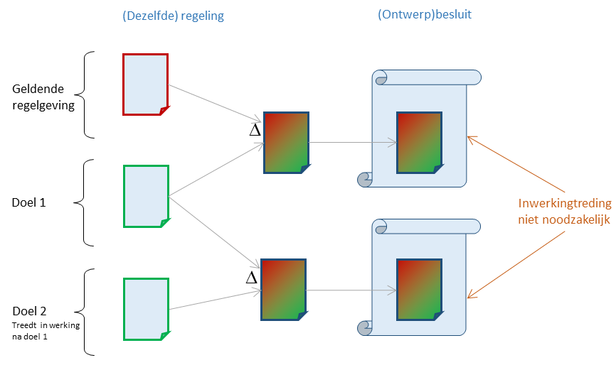
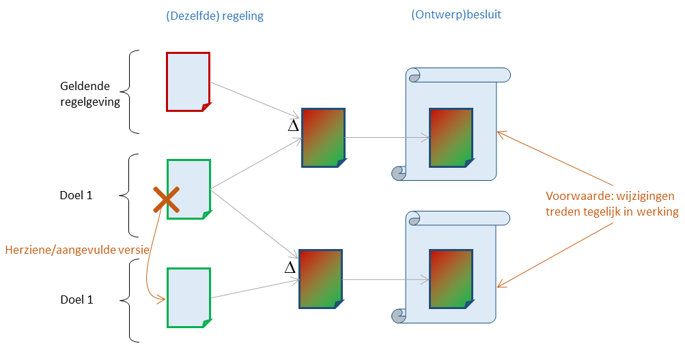
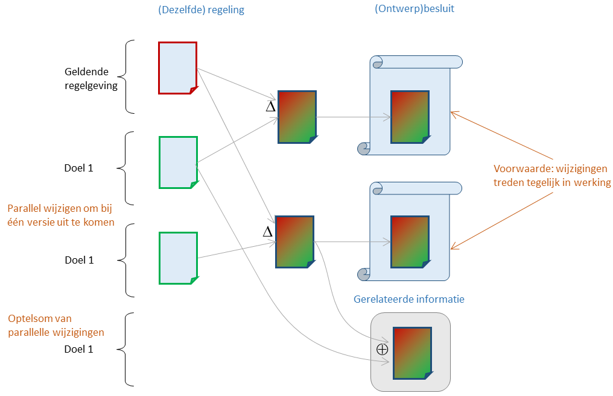

Opnemen van regelgeving in een besluit
In deze sectie worden verschillende manieren beschreven waarop nieuwe regelgeving in een (STOP-)besluit kan worden opgenomen. De beschreven manieren gelden zowel voor nieuwe/gewijzigde regelingen als voor informatieobjecten. In de illustraties staat voor sommige scenario's alleen de omgang met regelingen aangegeven; dezelfde scenario's kunnen in STOP worden toegepast op (te consolideren) informatieobjecten.
Algemene aanpak
In de meeste gevallen zal alle nieuwe en gewijzigde regelgeving die als één geheel in het overkoepelende proces wordt opgesteld, ondergebracht worden in één enkel besluit.

Op hoofdlijnen zijn er drie manieren waarop een regeling of informatieobject in een besluit opgenomen kan worden:
nieuw: Een nieuwe regeling of informatieobject wordt geheel opgenomen in het besluit.
wijziging: Als het bevoegd gezag besluit over een wijziging, en geen uitspraak doet over het al of niet correct zijn van de niet-gewijzigde delen, dan wordt alleen de wijziging ten opzichte van een eerdere (in het algemeen: de huidig geldende) versie in het besluit opgenomen. De standaard biedt daarvoor een renvooimechanisme voor een regeling en voor bepaalde typen informatieobjecten.
vervang: Als het bevoegd gezag besluit over de gehele versie van een informatieobject, of als de standaard geen renvooimechanisme ondersteunt voor dat type informatieobject, dan is er sprake van een vervanging van het informatieobject en wordt de volledige versie onderdeel van het besluit.
Er is een juridisch verschil tussen wijzigen en vervangen, dat bijvoorbeeld tot uiting komt als tegen een besluit beroep mogelijk is. Als een verschil is opgenomen in het besluit is alleen beroep mogelijk tegen de gewijzigde delen van de regeling of het informatieobject. Bij vervanging is beroep tegen de gehele versie mogelijk, ook tegen de onderdelen die niet gewijzigd zijn.
In de juridische praktijk wordt een regeling niet vervangen. Als een regeling inhoudelijk erg gaat afwijken van de geldende versie wordt de regeling ingetrokken en wordt een nieuwe regeling opgesteld. De standaard ondersteunt daarom geen vervanging van een regeling. Het intrekken van een regeling is beschreven bij de inwerkingtredingsbepalingen.
Bij het opstellen van de regelgeving is al bedacht welke versies van regelingen en informatieobjecten bij elkaar horen, en via de associatie met een doel is daar uitdrukking aan gegeven. Die informatie hoort als gerelateerde informatie bij het besluit; zonder die informatie is de geconsolideerde regelgeving niet af te leiden.
Als met een doel een of meerdere wijzigingen van regelingen en/of informatieobjecten zijn geassocieerd, dan moeten de wijzigingen zijn beschreven ten opzichte van eerdere versies van die regelingen of informatieobjecten die op hetzelfde moment geldig zijn of worden. Het is aan te raden het besluit pas op te stellen zo kort mogelijk voor de vaststelling van het besluit en als eerdere versie de versie te nemen die op dat moment geldig is, zodat de kans op consolidatieproblemen zo klein mogelijk is. Juridisch is het geen probleem als in de vast te stellen versie van het besluit een wijziging ten opzichte van een andere eerdere versie is weergegeven als bij een concept van het besluit. Weliswaar kan de ongewijzigde tekst (of bij informatieobject: ongewijzigde informatie) er anders uitzien, maar dat is niet waar het bevoegd gezag over besloten heeft.
Een regeling (of ook informatieobject) kan ophouden te bestaan. Dit wordt juridisch een "intrekking" van een regeling genoemd. In STOP hoeft daarvoor geen nieuwe versie voor gespecificeerd worden, maar wordt als onderdeel van de consolidatie-informatie bij een besluit meegegeven, gekoppeld aan het doel. De datum van intrekking is de inwerkingtreding geassocieerd met het doel.
Regelgeving voor meerdere doelen: gefaseerde inwerkingtreding
Als in het overkoepelende proces wordt gewerkt aan regelgeving die op meerdere momenten geldig moet worden en er dus voor meerdere doelen wordt gewerkt, heeft het bevoegd gezag de keuze hoe de regelgeving voor de verschillende doelen in besluiten wordt verwerkt. STOP staat het ook toe om de regelgeving voor meerdere doelen in één besluit op te nemen.

Dit komt bijvoorbeeld voor bij een nieuwe regeling waarin overgangsrecht is opgenomen dat enige tijd na de inwerkingtreding van de regeling vervalt. Omdat het overgangsrecht meestal samen met de regeling een besluitvormingsproces doorloopt, ligt het voor de hand beide in hetzelfde besluit op te nemen. Het besluit bestaat dan uit zowel de nieuwe regeling, als uit een wijziging ervan die op een later tijdstip in werking zal treden en waarvoor de nieuwe regeling de eerdere versie voor het renvooimechanisme vormt.
Voorbeelden
Dit is in een aantal voorbeelden uitgewerkt.
Regelgeving voor meerdere doelen: opeenvolgende besluiten
Het kan zijn dat het bevoegd gezag nieuwe regelgeving nodig heeft maar de uitwerking daarvan opdeelt in meerdere onderdelen die apart een besluitvormingsproces doorlopen. Bijvoorbeeld omdat de onderdelen andere prioriteiten hebben, waarbij een deel zo snel mogelijk en een ander deel best later in werking mag treden. Een andere reden kan zijn dat eerst over de hoofdlijnen besloten wordt en op een later tijdstip een nadere invulling daarvan behandeld wordt die desnoods later in werking mag treden. In dat geval is er sprake van meerdere doelen waarvoor (de wijziging van) de regelgeving in aparte (ontwerp)besluiten terecht komt.

In vergelijking met de algemene aanpak is het tweede besluit bijzonder omdat het regelgeving bevat geassocieerd met het tweede doel waarvan al wel bekend is dat het na (of zelfs tegelijkertijd met) het eerste doel in werking zal treden, maar waarvan (zeker bij een ontwerpbesluit) nog niet bekend is op welke datum dat zal zijn. De eerdere versie voor het renvooimechanisme wordt in dit geval gevormd door de regelgeving geassocieerd met het eerste doel, dat bij het bekendmaken van het tweede ontwerpbesluit geen onderdeel is van de geldende regelgeving.
De STOP-standaard ondersteunt dergelijke opeenvolgende besluiten. STOP maakt het ook mogelijk om voor dit soort scenario's via een proefconsolidatie de resulterende regelgeving te bepalen zoals die zou zijn als het ware het tweede besluit in werking treedt, ook al is de inwerkingtredingsdatum niet bekend. Dat is mogelijk door alleen de associatie van de regelgeving met doelen en de informatie uit het renvooimechanisme te gebruiken.
Voorbeeld
In dit voorbeeld van ConsolidatieInformatie worden meerdere doelen benoemd:
<ConsolidatieInformatie>
<BeoogdeRegelgeving>
<BeoogdeRegeling>
<doelen><doel>/join/id/proces/gm9999/2020/InstellingTweedeOmgevingsplan</doel></doelen>
<instrumentVersie>/akn/nl/act/gm9999/2020/REG0002/nld@2020-05-15;1</instrumentVersie>
<eId>art_II</eId>
</BeoogdeRegeling>
</BeoogdeRegelgeving>
<Intrekkingen>
<Intrekking>
<doelen><doel>/join/id/proces/gm9999/2020/IntrekkenOmgevingsplan</doel></doelen>
<instrument>/akn/nl/act/gm9999/2020/REG0001</instrument>
<eId>art_I</eId>
</Intrekking>
</Intrekkingen>
<Tijdstempels>
<Tijdstempel>
<doel>/join/id/proces/gm9999/2020/IntrekkenOmgevingsplan</doel>
<soortTijdstempel>juridischWerkendVanaf</soortTijdstempel>
<datum>2020-07-01</datum>
<eId>art_I</eId>
</Tijdstempel>
<Tijdstempel>
<doel>/join/id/proces/gm9999/2020/InstellingTweedeOmgevingsplan</doel>
<soortTijdstempel>juridischWerkendVanaf</soortTijdstempel>
<datum>2020-07-01</datum>
<eId>art_III</eId>
</Tijdstempel>
</Tijdstempels>
</ConsolidatieInformatie> voor twee ontwerpbesluiten is dit uitgewerkt.
Regelgeving voor één doel in meerdere besluiten
Als de regelgeving geassocieerd met één doel erg omvangrijk is, komt het voor dat bijvoorbeeld over een nieuwe regeling in onderdelen besloten wordt. Het eerste besluit bevat de regelgeving op hoofdlijnen en kan al bekendgemaakt worden voordat de details en regelgeving voor gespecialiseerde onderwerpen geschreven is. Die regelgeving wordt via aparte wijzigingsbesluiten aan de nieuwe regeling toegevoegd, met de bedoeling dat de nieuwe regeling inclusief de wijzigingen tegelijk in werking zullen treden. De Omgevingsregeling is op die manier tot stand gekomen. Een vergelijkbare situatie doet zich voor als een wijziging van een bestaande regeling in verschillende onderwerpen wordt opgesplitst met als oogmerk dat alle wijzigingen tegelijk in werking treden.
Er zijn twee manieren om dit in STOP te bereiken. Bij een nieuwe regeling zal altijd het eerste besluit de hoofdlijnen van de nieuwe regeling moeten bevatten; bij een wijziging van een regeling kan op de geldende versie van de regeling worden gewerkt.
Aanbevolen manier 1: sequentieel
De beste manier is om daarna in elk wijzigingsbesluit als eerdere versie voor het renvooimechanisme de versie te gebruiken die resulteert uit het besluit dat als laatste is bekendgemaakt. De versie die resulteert uit het laatst bekendgemaakte besluit vormt dan automatisch de (proef)consolidatie van de reeks besluiten.
voorbeelden
Dit is in het voorbeeld Nieuwe regeling met iwt en het voorbeeld Wijziging in regeltekst uitgewerkt.
Manier 2: parallel
Een andere manier is om na het eerste besluit parallel te werken aan separate besluiten voor de nadere invulling. Alle besluiten hebben de eerstbekendgemaakte versie van een nieuwe regeling of (bij wijziging van regelgeving) dezelfde geldende regeling als eerdere versie voor het renvooimechanisme.
Het nadeel is dat na bekendmaking van het tweede wijzigingsbesluit niet af te leiden is wat de toekomstige versie van de regeling zal zijn. Er is sprake van samenloop die ten laatste opgelost moet worden als het moment van inwerkingtreding geassocieerd met een doel in een (al dan niet apart) besluit is bekendgemaakt.

Voorbeeld
Dit zal in een toekomstige release in een voorbeeld uitgewerkt worden.